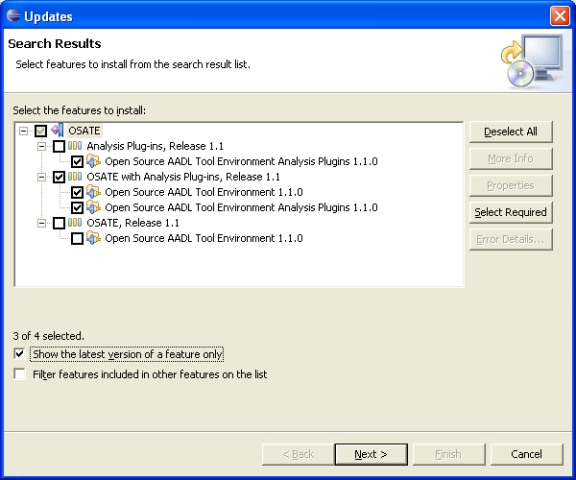

Previous
Next
Previous
Next 
| 3.3 Use the Eclipse Installation/Update Manager |
Start your Eclipse and go to the menu entry “Help > Software Updates > Find and Install”.
Select “Search for new features to install” and click “next”.
Select “New remote site” and enter “OSATE Update Site” as the site’s name and
“http://la.sei.cmu.edu/aadlinfosite/OSATEUpdateSite” as the site’s URL. Click “Ok”.
The new update site is added to the list of update sites, and is by default selected. Click on
“Finish” to search the selected update sites for (in this case, the OSATE update site) features to
be installed. Eclipse will find that the OSATE features are available for installation; see Figure
1.

Figure 1: Installing OSATE from the update site.
The update site offers three combinations of features:
- “OSATE”, which includes just the osate-frontend feature.
- “Analysis Plug-in”, which includes just the osate-plugins feature. Eclipse will not allow this feature to be installed if the osate-frontend feature is not already installed.
- “OSATE with Analysis Plug-ins”, which includes both features. In general, you should select this installation option.
Choose the features to install, and click on “Next >”. Eclipse will present to you the license
agreement. You must agree to the license to continue with the installation.